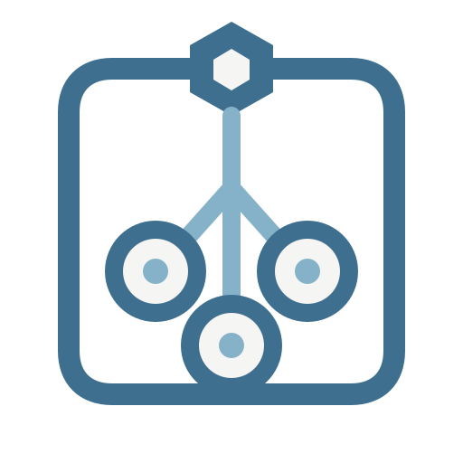
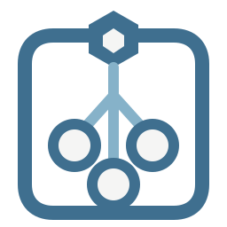
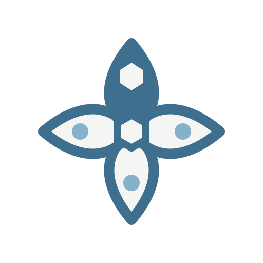
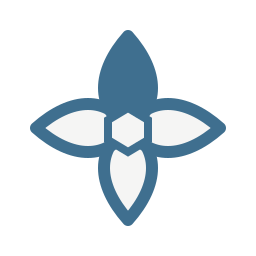
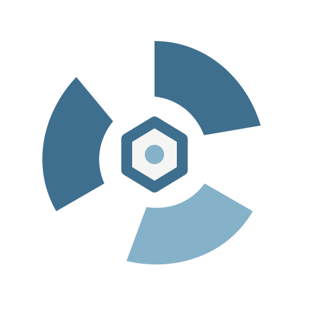

G · CONTAINER SYSTEMG · NODE VAULT
节点舱
一条带顶部入口的连续容器定义 Node，六边形表示父级权威，内部三枚等形端口表示节点拥有的资源。所有元素服从同一圆角和线宽。
节点容器资源归属稳重

16243248

G · CONTAINER SYSTEM一条带顶部入口的连续容器定义 Node，六边形表示父级权威，内部三枚等形端口表示节点拥有的资源。所有元素服从同一圆角和线宽。


H · SINGLE PETAL GRAMMAR同一个叶片旋转四次形成完整徽记；顶部实心叶片代表父节点，其余三个叶片代表资源域。中心六边形把四个方向收束成一个整体。


I · THREE-BLADE FLOW三片同源几何围绕中央 Hub 旋转，分别承载变量、流与主题；负空间形成持续运动感。它不直接画拓扑，更接近独立品牌符号。